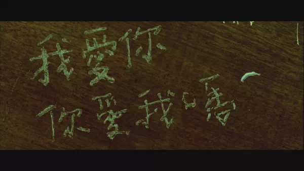
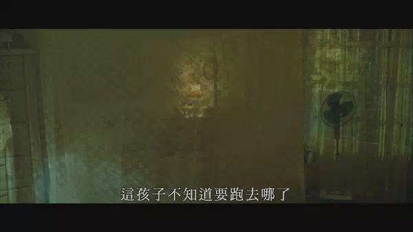
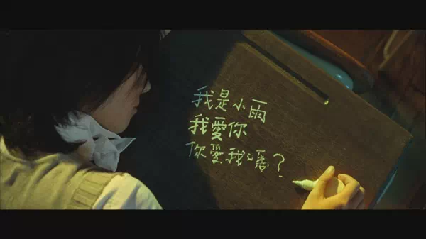

回顾《不能说的秘密》，你真的看懂了吗，太牛了！
看过的观众会说，<不能说的秘密>还不至于“牛逼”吧？ 恩，那我就试着一点点说吧。
首先一点，这部电影“没有一句废话”。
（这部电影说的是1979年的桂纶镁，穿越到1999年，遇到周杰伦后发生的故事。周杰伦饰叶湘伦，桂纶镁饰路小雨）
在影片的一开始，画面出现了一本古老的琴谱，配上宏大、谲诡的弦乐，透着一股神秘的劲。这部琴谱，就是穿越的源头，整个故事都因它而起。
开始了。
打这起，开始详解我之前说过的“这部电影没有多余的话”。
这里有几句看似闲聊的话，其实是在交代人物背景和埋下伏笔。
“我以前就听说过你了诶”“哦，真的吗。”
“你是主修钢琴对吧？”“对啊”“为什么想来转来我们学校？你们学校不好吗”“因为你们学校比较漂亮啊。没有啦，我爸叫我来的”
开头的“我以前就听说”，接上后面的“主修钢琴”，其实意在衬托周杰伦钢琴弹的很好，以致于“早就听说”。这是为后面斗琴的情节做铺垫，前面不指出他钢琴弹的好的话，后面“斗琴”就显得太突兀了。如果拍个奖状奖杯什么的又显得太俗。简单的一句“我以前就听说过你”，显得自然不露痕迹，这是上档次的表现手法。至于他爸为什么要他转来，后面也给了合理的解释，因为他爸是这学校的老师嘛，自然想看着儿子在自己眼底下毕业。
“好漂亮哦”“这栋琴房已经有100年的历史了”
“一百年啦”（强调100年）“恩，不过在我们毕业典礼的那一天就要拆掉了。”
这里又给出了一个线索：这栋琴房在毕业典礼那天就要拆掉了。理由是已经“有100年的历史”，要盖新的。
强调是在毕业典礼的“那一天”，因为这句话，才有后面女主回到1999年，去见男主一面的情节。才有结尾周杰伦冒险去弹琴的高潮。
男主鬼使神差地独自进入了琴房大楼。注意听后面隐隐约约的音乐，桂纶镁刚刚来到1999。这里从周杰伦进门到和桂纶镁相遇足足给了一分钟的镜头，也就是拍了一分钟周杰伦在走廊的情景。这里其实是在说，接下来要见的，是个很重要的人哦。
周杰伦和桂纶镁的firstsight
（firstsight 强调一下，桂纶镁穿越回来后第一眼看见谁，那个人才能看到她。）
上课了。
这里有一点好玩的地方，黑板左下角的值日生是方文山 和 黄俊郎。。
桂纶镁进教室。（由于firstsight的缘故，此时别人都看不到她）
老师在提醒周杰伦不要往后看。
这个镜头很厉害，虚化了晴依，将焦点对在桂纶镁身上，让人不易察觉她俩都在笑。
别人是看不到桂纶镁的，所以老师和同学觉得周杰伦是在看晴依，所以晴依才得意地偷笑。这个镜头非常用心，因为只有看第二遍以上才知道这个笑的意思。
为了突出两人的笑是这个意思，还拍进了前面一个女生，她因为知道周杰伦肯定不是看自己，一点也没笑。
“这是一个不能说的秘密”周杰伦在问她那首曲子的名字，她没有回答他，又回答了他，那首曲子确实叫《Secret》。
这部电影中的对白，充斥着大量的双关，只有在你什么都明白了之后，才会理解其中的深意。
回家了。
（买菜回家）
之前看到的时候一直在纳闷这个情节想要表达什么，好像没什么意义嘛。仔细想想才明白，在整部电影中，周杰伦一直在极力避免两样东西。物质和性。整部电影里没有出现过金钱，性暗示之类的东西。或许周董觉得这两样东西会使爱情不那么美好吧。
回到学校了。

黄秋生在教导学生。
桂纶镁笑了一下。
周杰伦又马上要走。
桂纶镁看到教训学生为什么要笑？聊着好好的周杰伦为什么要走？
原来桂纶镁笑是因为看到20年后的黄秋生感到有趣，而周杰伦要走是因为黄秋生是他爸，不想让老爸看见自己和女同学在一起。这些也是在看第二遍的时候，才能体会到这两句的深意。
黄秋生也是很重要的角色，在这里就把人物铺垫出来了。
去散步。
“我都没吃过”，这句话是桂纶镁说的。这句话暗示桂纶镁不是1999年的人，这个不难理解，但是难得的“导演周杰伦”能想到1979年那个时候没有锥形冰淇淋。
在台湾，锥形冰淇淋的出现是在20世纪80年代后期，并且在台湾冰淇淋市场占有率过半的coldstone和杜老爷都是在1988年先后成立的。所以这一句话出现的很严谨。是有过生活体验或者考史的。而且即使桂纶镁那个时期已经有了冰淇淋，也不构成硬伤，可以理解成她不爱吃零食。
不行，越想越觉得厉害了。
另外在后面还有这样的对话
也是在暗示小雨的身份。与身边的人格格不入的生活习惯。（抱歉，这段真截不到桂纶镁好看的图。。）
精彩的斗琴桥段
这段有人和《海上钢琴师》比较，认为是抄袭。其实两者同为斗琴，本质是有区别的。《海》是一台钢琴，你上完了我来；这里是两台。《海》是一开始眼看要输，最后绝地反击的节奏；这里是步步压制。《海》是没有两人合作的戏份的，这有。不能说只要钢琴比赛的片段，都是抄袭吧？
斗琴的这段，可以听出周杰伦的音乐功力真的很厉害，可以编的这么好听，前后节奏也掌握的很棒。这一段非常之棒，甚至一度让我萌生了学钢琴的念头。。。
四手联弹
很浪漫的情节，也是我最喜欢的桥段之一。但是我想光夸不行，得说说缺点。这一段据桂纶镁说“前前后后拍了70多次”，这70多次怎么剪辑，是非常考验剪辑能力的。这里还是出现了一处破绽。
注意看白袖子：
这是连贯的画面，不往下拽的话，外层的衣服是不会盖住里面的袖子吧。这是剪辑的一处痕迹。但令人惊讶的是，其余地方例如发型，摆设，却看不出破绽。说明周杰伦确实当时在意过这点，而世上没有完美的事，拼接总会有点破绽的。
周杰伦来到桂纶镁家里。
这里用了不显眼的镜头，出现了一个中年女人。
这个看似一闪而过的镜头很重要，在这里的铺垫是很难发觉的，哪怕再回过头看几遍也很可能看不到她。
这个女人其实就是中年的小雨。
为什么我会确定这就是中年小雨，而不是小雨的妈妈或者其他人呢。首先，这是小雨的家。我们又知道小雨家里只有她和她妈妈。小雨的妈妈在1979年就已经40多岁了，现在应该是60-70岁。这里出现的女人从形态，穿着上来看，不是60-70岁年龄段的样子。
再通过后面这个镜头判断，这个房间是小雨的房间，而不是邻居或者其他人的。（窗前树的形态）
中年的小雨，和高中的小雨怎么会同时出现呢？这牵扯到时空的问题，稍后再详谈。
小雨的哮喘，在这里给先交待出来。为后来悲剧的顶点--------小雨的死埋上一笔。
表白，接吻。这里用的镜头很美，据说当时布置了好多机位，几乎360度全有，拍了两条，但最后还是只选择这个背影。夕阳，藤椅，板凳，海边，轻舟，逆光，。。还有不直视亲密接触的含蓄。
舞会结束后，桂纶镁无意中得知这里快拆了，决定要教给周杰伦《secret》。这里又是给最后小雨
穿越回来，周杰伦穿越回去埋下伏笔。
“你一定要弹那么快吗”“我回去都弹那么快啊”又是一句双关语。
周杰伦认为的“回去”以为是回家，其实是回去1979。又特别嘱咐了别在旧琴房弹这首曲子。这时桂纶镁的心理很复杂，特地教给他这首曲子，又不想让他真回去找她。只是想把这首连接你我的曲子，作为彼此的纪念。
晴依的紫色手链。这是伏笔，后面说。
桂纶镁目睹晴依和周杰伦接吻后跑了。（周杰伦以为和自己接吻的是桂纶镁）
桂纶镁妈妈买苹果回来。
这时的小雨还活着，是个中年女人。这里我觉得是时候说了。
首先，这里的历史是不断改变的，改变的因素就是小雨的穿越。通过小雨的每次穿越，历史会发生不同的改变。之前窗户里的中年女人，也就是中年小雨的出现，指的是小雨在那次穿越之后改变的历史现在的样子。也就是在天台小雨和周杰伦接吻后，回到过去再也不回来了，然后历史演变，学习、毕业、工作、生活。小雨就会成这样子，一个这样子的中年女人。如果这时候出现她妈妈的话，她妈妈也是一个正常的老人，不会有神智不太清楚的样子。
后来小雨目睹了晴依和周杰伦接吻，历史又改变了，她回去之后发生了一系列的事：和老师（也就是黄秋生）讲述自己经历、被认为是精神病、受不了同学的嘲笑退学、母亲因为自怨自艾和伤心变得神经质。
于是这时的小雨，在长期被认为是精神病的情况下，变得自闭，因为哮喘，常常把自己关在房间里不出门，又因为周杰伦曾送给她苹果而喜欢上吃苹果，所以让妈妈买苹果回来。
这个镜头：
这个视角意味着什么？有人隔着窗户看周杰伦。会是谁呢？
只有路小雨了。（前面说过她家里只有“她”和“她妈妈”）
这说明小雨此时还活着。20年后的小雨，看到年轻时的恋人，为什么不见他呢，仔细想想小雨的心情很值得玩味。
五个月后毕业典礼：
小雨在毕业典礼出现了。可以看出时间的流逝，她的头发也长了许多，因为长期伤心难过，而且待在家里不见天日，显得脸色惨白。
闭着眼从琴房走到毕业典礼大厅，听到周杰伦献给自己的曲子，睁开了眼。周杰伦看到了她，立刻停下来跑出去追她。然后桂纶镁看到了他手上晴依送他的紫色手链，以为他们在一起了，伤心地回到1979。
从这开始，周杰伦明白了，原来小雨是不存在的，或者说一直以来都是只有自己一个人能看到她。起初看到这还以为是《fightclub》那样，周杰伦精神分裂，桂纶镁是他的幻想。。
回到教室，坐在小雨的座位上。看到小雨在写字。

小雨用立可白写字，这是两人跨越时间的对话。这个情节的出现，象征着小雨的死。
这里小雨的妈妈显得更神志不清，因为这时候小雨在1979年已经死了。

吐槽一下，这里的周董为什么要画的那么惨。。这个不是重点，仔细看画画用的纸有淡淡的五线谱，这本琴谱就是周杰伦在天台送给她的，夏米.卡夫卡.圣桑的《LECYGNE》（天鹅）。
借黄秋生的嘴，从小雨的角度切入故事。叙述的情节大意就是小雨无意间翻到了一本琴谱，然后穿越，然后回来给黄秋生谈心，黄秋生认为她是精神病，这事传开了之后全班都知道，受不了欺负退学。
到了毕业典礼那天，她想见周杰伦最后一面，跑到学校穿越去1999找他，却看到周杰伦手上绑着晴依给他的手链，以为他们俩在一起了。
于是回到旧琴房穿越回1979，坐在教室里。
这段哭的我心都碎了。一阵一阵地揪心。
小雨哮喘发作，药没有带。

小雨的生命走向了终点。确切的说是在这个历史下的生命。
每个时段的历史都不一样，比如桂纶镁在目睹了周杰伦和晴依接吻之后，回到1979年，给黄秋生谈心，交给了他那本《secret》。在发生这件事之前的1999年，黄秋生是没有那本曲谱的。
讲述完之后的黄秋生回头一看，周杰伦已经走了。袅袅的烟头显示他走得很匆忙。
周董冒着生命危险爬上正在拆迁的教学楼，到旧琴房，开始弹奏secret。
Follow thenotes upon the journey
At firstsight marks one's destiny
Once thevoyage comes to an end
Return lieswithin hasty keys
《secret》曲谱的首页这几句话，就预示着他们的结果。第一眼就注定了缘分，当旅途走到终点，回路藏在急速旋律中。
周杰伦在最后一刻，敲下了最后一个音符，回到了过去。准确的说是更过去的过去，而且他再也回不来了。
（这里有争论，有观点认为周杰伦最后一个键没有敲下去就被砸到了，所以最后结局都是幻想。但是要注意仔细看，周杰伦在没有被铁球砸到之前，手指按下去的那几秒钟，注意看他右手的袖口，有明显的震动。这个震动是手指按到东西后，反作用力给予的物理反馈。也就是说，镜头里是明确看到了穿越已经成功）
他来到了小雨的时代，是他俩认识之前的时间。
周杰伦推开了门。
小雨善意却陌生的笑。
你还记得我吗?
依然是陌生而善意的笑。
不论你是否还记得我，只要看到你活着就好。
之前的穿越都是平行的时间，比如穿越之前是12：35，过去之后还是12：35。刚才周董在弹钢琴的时候是晚上，这时却是在下午，暗示这次的穿越因为周董钢琴弹的太快，或者是最后一次的魔力比较大，回到了更久以前的时间。
毕业合照。周杰伦和桂纶镁在一起了。
最后的结局布置得很有意思。周杰伦废了多大的劲，舍去父亲，学业，朋友，来到小雨身边，见面之后或许该皆大欢喜，高兴得乱蹦乱跳之类的，但是却没有这样安排。两人只是几个眼神，周杰伦一个手势，最后放一张毕业照片，就把什么都解释了。
这里说一点，为什么周杰伦回去之后，能看到他的不只小雨自己。这是因为1999年的旧钢琴已经毁了，在毁掉之前，这架钢琴完成了它最后一次的时空穿越，之后它的魔力也就失效了，周杰伦再也回不到1999，Atfirst sight makes one‘s destiny也就随之失效。
这部电影我省略了很多部分，包括一些对话，对话是重点，诸位再看一遍就能体会简单几句对白蕴含了多少心血，双关了什么意思。整部电影几乎找不到bug，这对科幻元素的电影来说非常困难。周杰伦和桂纶镁的演技浑然天成，周杰伦是因为演他自己，桂纶镁却是实力的演技。
叙事上用了倒叙，插叙等，却一点也不显得乱，脉络很清晰，最难得的是在桂纶镁每一次穿越后改变的当前历史，抓的很细致。周董或他的制作团队，对霍金“平行空间”理论研究得很透彻。尤其在不经意的细节中，处处都能体现出来。
不知道诸位看这部电影有什么感受，我在看前半段时，一直是笑着的。起初很奇怪为什么会笑，笑不是应该听到笑话、得意的时候才有么，看别人谈恋爱有什么好笑的。然而有一天看到热恋阶段，见到你的男/女朋友你想做的第一件事是什么？这个答案，忽然说不出的感动。片中每次桂纶镁见到周杰伦时，做的第一样事，笑。这是发自内心的开心，我也有种说不出的开心。
以上。
最后，这部电影中的爱情虽然并不是我想要的境界，却总能在不同时候，不同层次地，带给我爱情最初的感动。
加失眠君个人微信号：caowobuyaoting ，交个朋友~